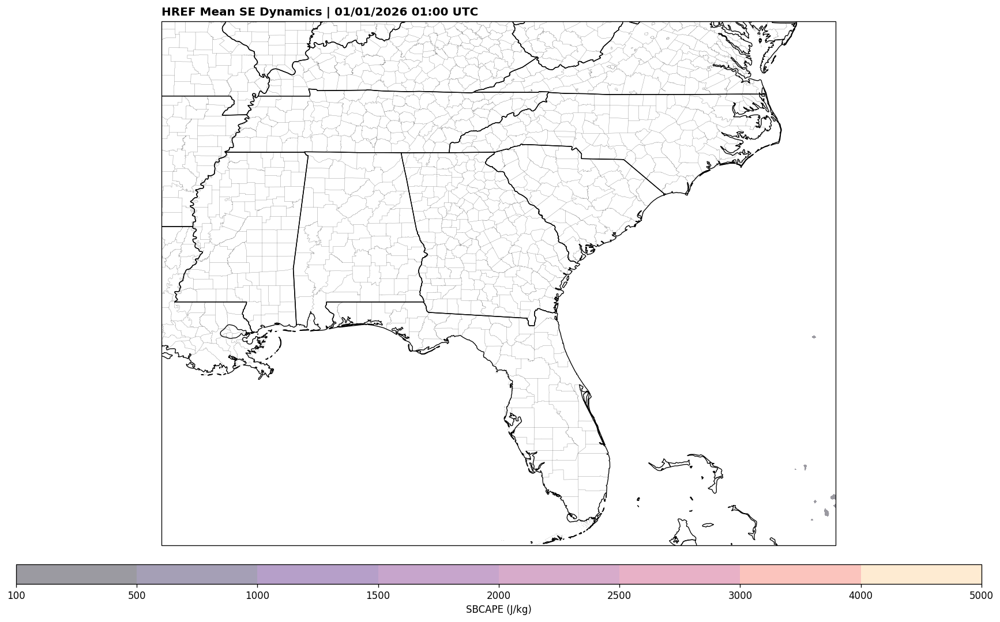

🌧️ Rainfall Dashboard
🌪️ Dynamics Explorer (Test)
HREF Ensemble Mean: SE Dynamics Quick Test
Hover over a forecast hour to update the map

Hodograph Heights (AGL):
0-500m (Magenta)
0.5-3km (Red)
3-6km (Green)
6-9km (Yellow)
Storm Motion Markers:
● Bunkers Right-Mover
● Bunkers Left-Mover
Dashed rings @ 20, 40 kt
Solid Map Lines: State/County Borders